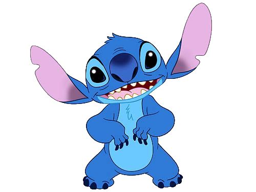
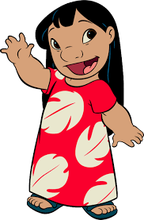
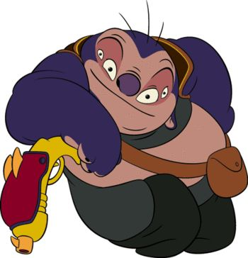
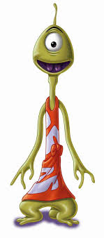
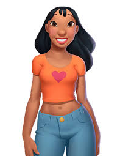
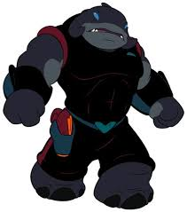

Welcome to Lilo & Stitch
It came from outer space!
Fun Facts
Characters

Stitch
Experiment 626

Lilo
Stitch's Best Friend

Jumba
Stitch's Creator

Pleakley
Galactic Federation Agent

Nani
Lilo's Sister

Captain Gantu
Galactic Federation Captain